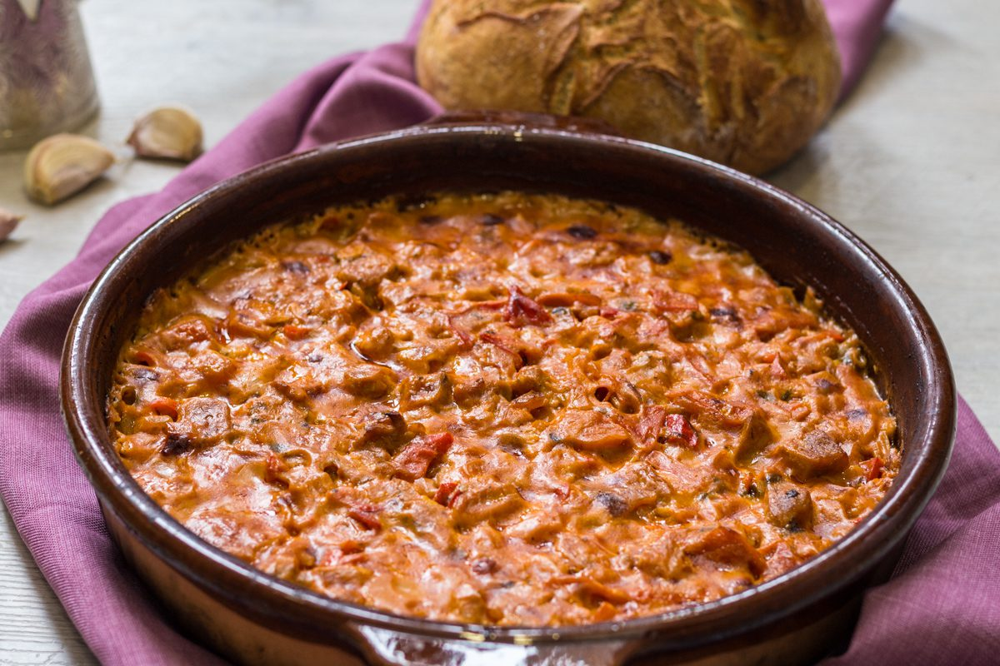
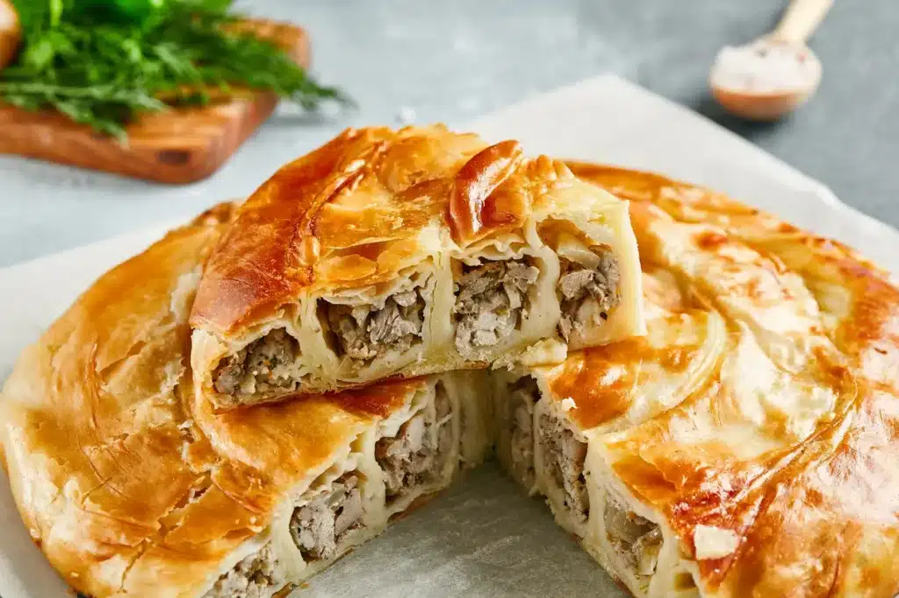

on vas commancer par le 3eme meilleurs plats traditionnel albanais
Le Fërgesë est un plat traditionnel d’Albanie, surtout répandu dans la région de Tirana, Durrës, Kavajë, Shijak et Elbasan

continuons avec le 2eme
Le byrek c'est un feuilleté salé avec de la viande achée

1er
Tavë Kosi est un plat composé d’agneau rôti et de yaourt cuit au four, souvent considéré comme le plat national du pays.